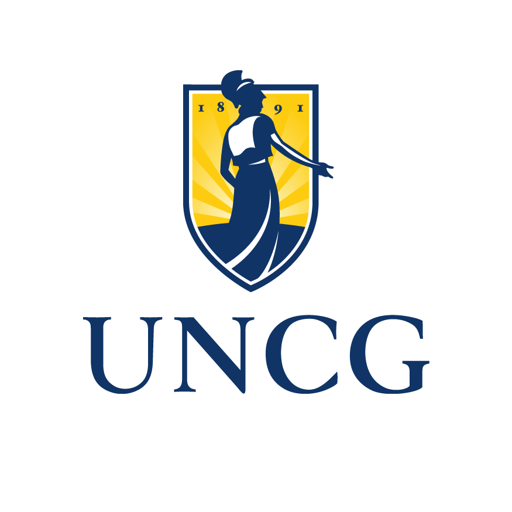
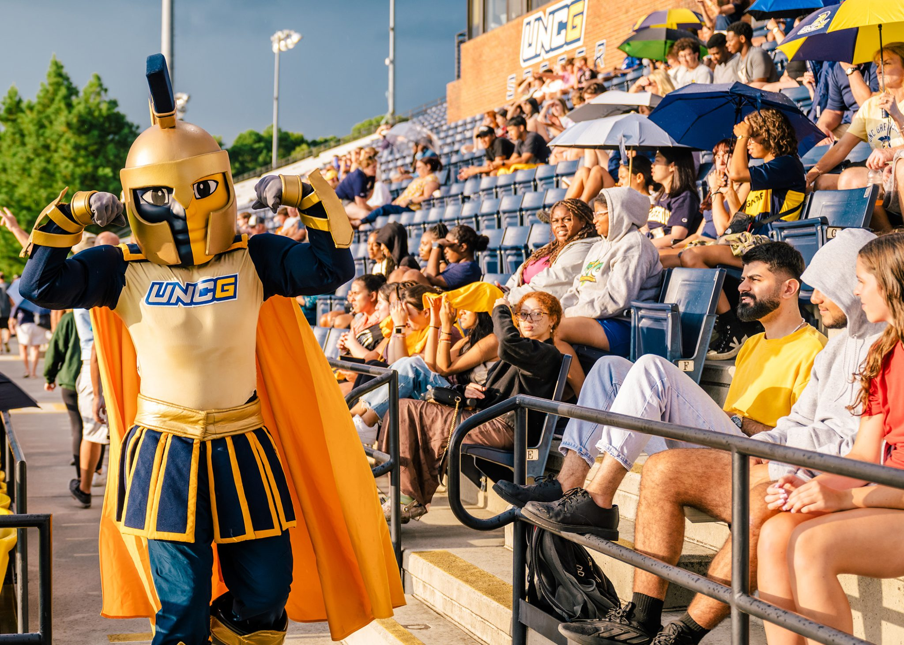
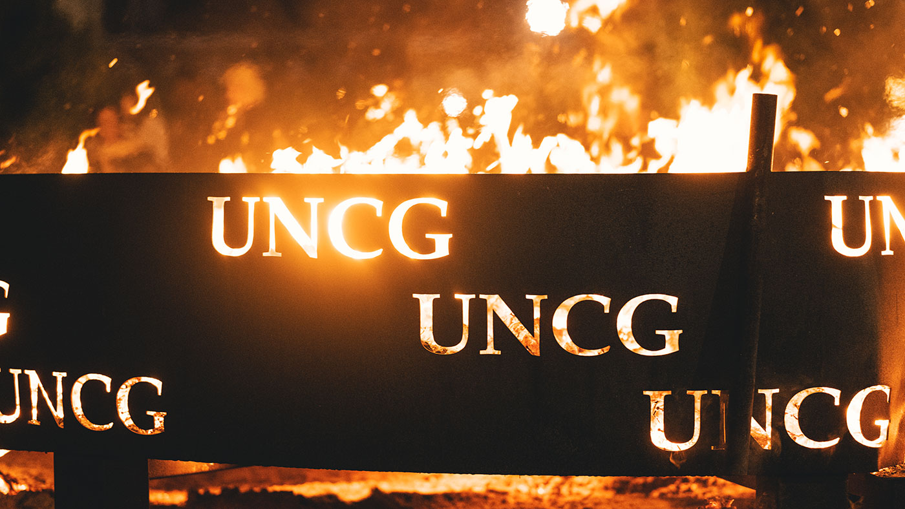
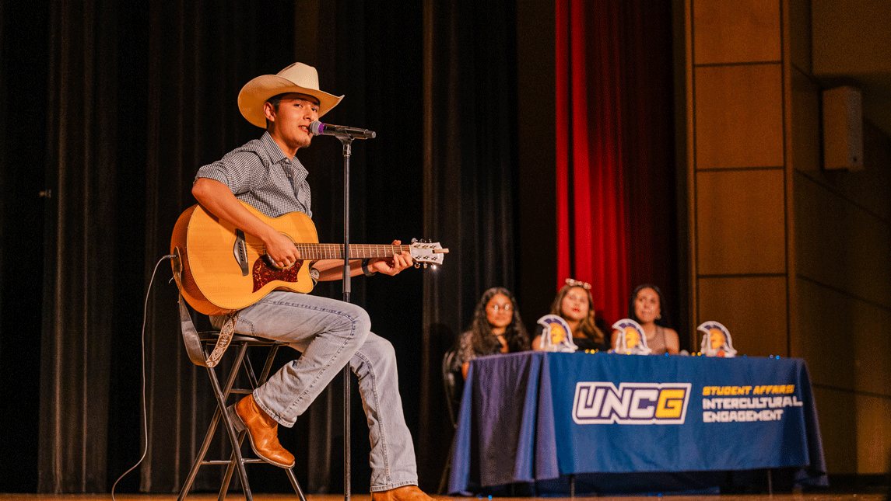
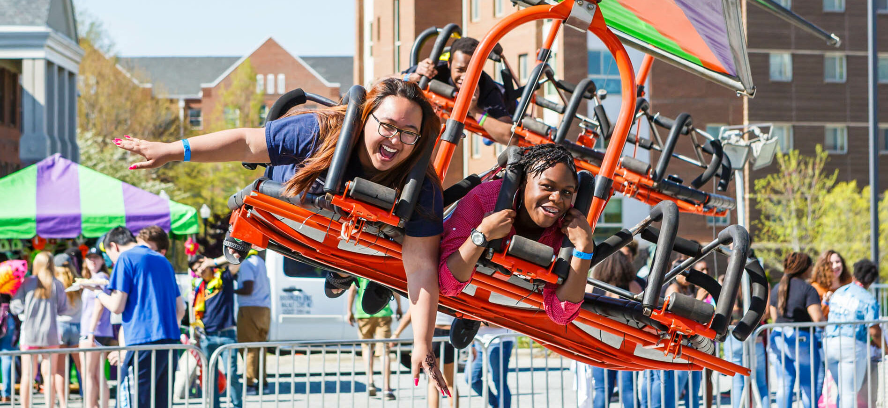

Campus Event Guide: Event Spotlight
Welcome to the Campus Event Guide! Where you can find anything you need.
Welcome to the Campus Event Guide! Where you can find anything you need.


A sports competition happening on our own school grounds. Get ready on November 22nd, 2026 at 2pm for the biggest campus event yet! Held at our grand Kaplan Center of Wellness, we're giving our athletes a chance to amaze. Not all sport competitions will take place inside, but there will be refreshers and oppoturnities to eat, so we all can enjoy the show through and through.
Attendes are expected to dress appropriately since events will be inside and out. Attendees can come and go as they please, there will be signs and faculty posted to guide attendees around the event. Parking is available in the Oakland Parking Deck, a short walk from the Kaplan Center. We ask all attendees to check in at the registration room upon arrival so we can keep an accurate headcount for safety purposes.
The Kaplan Center of Wellness is fully wheelchair accessible, with accessible seating available at every event station. ASL interpreters will be on site for the Initial Gathering and Closing March


